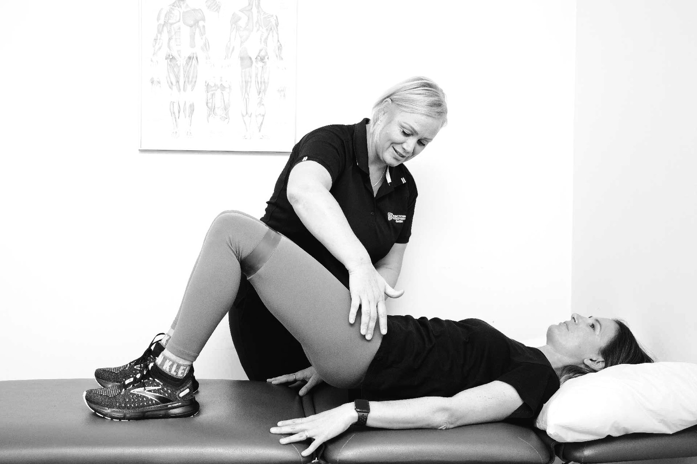

Acute or long-standing, neck and back pain responds well to the right physiotherapy. We find what's driving your pain and give you a clear plan to move freely again.

Most neck and back pain is very treatable, and you rarely need a scan to get started. We assess how you move, identify what's contributing to your pain, and combine hands-on treatment with targeted exercise so you get relief now and stay well long term.
Book an assessment and get a clear plan to settle your neck or back pain.